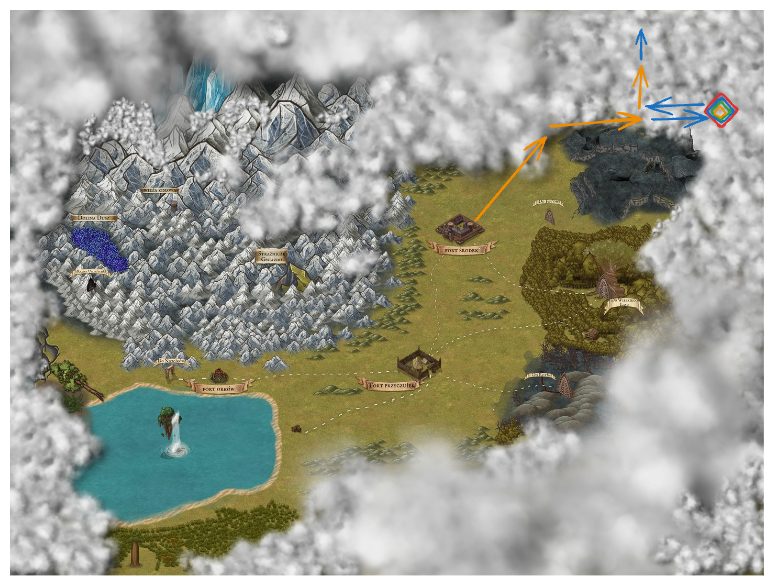

2024-04-19 - Stary trakt
Legion poszukuje zwiadowców chętnych do potwierdzenia pogłosek o starym trakcie na północny wschód od fortu środek
Meta
- [played_on:: 2024-04-19]
- [played_as:: Beetle]
- [prev:: 2024-04-17 - Droga do Obalonego Drzewa (zamek)]
Characters
Poświat

Excalidraw drawing: 2024-04-19 - Stary trakt (excalidraw).
Full resolution image: Poświat.
{kind=link}
Log
- Wjeżdżamy wozem do Fortu Środek — przypomina małą warownię.
- Iroh rozgląda się za Orkami. -_-
- Idziemy w stronę warowni.
- Kapitan — Jenna Silverbolt — tłumaczy nam, że zwiadowcy znaleźli stary trakt prowadzący na północny-wchód — mamy znaleźć zabudowania i rozumne istoty; nie atakować (!).
- Poprzedni zwiadowcy napotkali żywiołaki i trolle. Dodatkowo przeszkadzały im iluzje, m. in. kamienne ściany.
- Dostaniemy wóz i jednego konia.
- Mamy spotkać się z przywódcą gildii alchemików: Godar Stronghand.
- Idziemy do gildii alchemików i rozmawiamy z Godarem. Dostajemy jeden Health Elixir.
- Wsiadamy na wóz i jedziemy na północ. W oddali widzimy kamienne zarysowania.
- O zmierzchu docieramy do początku kamiennego traktu.
- Rozbijamy obóz na noc; noc mija spokojnie.
- Rankiem ruszamy na trakt. W oddali ponownie widzimy wielkie kamienie.
- Pomiędzy wzgórzami widzimy wydeptaną ścieżkę, a na niej 5 osób; wyglądają jak mnisi z zakrytymi twarzami.
- Mnisi zmierzają w naszą stronę.
- Isha rozpoznaje ich jako zakonników, ale to jest dziwne, że nie mają żadnych symboli religijnych na sobie.
- Isha i Balaur śpiewają i grają na instrumentach. Ve Mae tańczy.
- Jeden z mnichów daje Isha worek w którym jest mięso.
- Iroh pyta mnichów co tutaj robią. Jeden z nich odpowiada: “Ruszamy, żeby dołączyć do naszych braci. Kult Puchara.” Zatrzymujemy się z nimi, żeby porozmawiać o ich kulcie.
- Mnisi oferują nam swoje mięso, które wygląda dziwnie. Iroh nie rozpoznaje rodzaju mięsa, ale jest ono sztywne i nie jest ususzone.
- Mnisi mówią o portalu, gdzie, na drugiej stronie, zbierają mięso.
- Klasztor mnichów znajduje się na końcu ścieżki z której przyszli na trakt.
- Ve Mae dostaje od mnichów medalik z Pucharem. Isha identyfikuje medalion jako “symbol ludzkich rozrywek”.
- Mnisi informują nas o “dziwnych stworzeniach” na końcu traktu.
- Jeden z mnichów przedstawia się jako Opat.
- Mnisi ruszają w swoją stronę, a my ruszamy dalej. Widzimy coraz większe formacje skalne. Widzimy ścieżkę pomiędzy formacjami skalnymi.
- Beetle przypatruje się skałą, które nie wyglądają naturalnie.
- Beetle rzuca węglem na ścieżkę skalną. Isha rzuca mięsem.
- Jedziemy 2h dalej, po czym docieramy do kolejnej odnogi, która prowadzi na północ (trakt prowadzi dalej na wschód).
- Ve Mae rozpoznaje na północnej ścieżce ślady zmiennokształtnej istoty.
- Ve Mae przypatruje się północnej ścieżce i dostrzega lewitujący obiekt, który pojawia się i znika.
- Idziemy północnym traktem; w połowie dostrzegamy pojawiające się schody zawieszone 6 piętej nad ziemią. Schody zmieniają kąt pod którym się pojawiają.
- Ve Mae dostrzega, że schody które się pojawiają czasami są zrobione z kamieni, a czasami z części budynku.
- 200m od nas znajduje się kamień zmieniający kolory; czasami wyskakuje od niego błyskawica.
- Zbliżamy się do kamienia i zostajemy zaatakowani przez elementarne pająki.
- Po walce dowiadujemy się, że kamień zaburza rzeczywistość.
- Iroh zauważa, że rzeczywistość dalej jest zaburzona. Dalej widać dziwnych ludzi.
- Wracamy do głównego traktu i rozbijamy obóz na noc.
- Jedziemy dalej traktem; po południu zauważamy grupkę namiotów na horyzoncie.
- Jedziemy w stronę namiotów. Isha i Balaur zaczynają śpiewać i tańczyć. Podchodzą do nas kotołaki.
- Widzimy grupę kotołaków i grupę ludzi ubranych w stroje ochraniające przed wiatrem.
- Ktoś do nas mówi, ale nic nie rozumiemy.
- Ve Mae rozpoznaje jedno słowo w wypowiedzi: “więźniowie”.
- Z namiotu wychodzi duży tygrys i pyta się nas czy jesteśmy “właścicielami tego miejsca”.
- Wchodzimy do namiotu razem z tygrysem.
- Dowiadujemy się, że tygrys i kotołaki są niewolnikami z innego świata, dlatego uciekli przez portal do tego.
- Koty prezentują nam przedmioty do kupienia. Jednym z przedmiotów jest Wind at your back. Isha kupuje kamienny flet. Balaur kupuje zdobiony kij. Beetle kupuje Wind at your back (^wind-at-your-back).
- Dowiadujemy się, że portal kotołaków jest 3 księżyce od obozu (3 dni).
- Podróżujemy dalej z kotami w stronę ich portalu.
- Po 3 dniach podróży koty schodzą z traktu, idą na północ. Znajdujemy tam portal między ruinami. Koty przechodzą przez portal.
- Przechodzimy przez portal i widzimy wnętrze budynku.
- Beetle widzi łodzie piaskowe.
- Iroh pyta się kotów w która stronę jest ich dom. Dom jest oddalony o 140 dni podróży na północny-zachód.
- Wracamy do Fortu Środek.
- Raportujemy do Jenna Silverbolt.